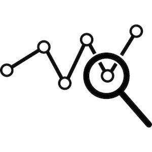
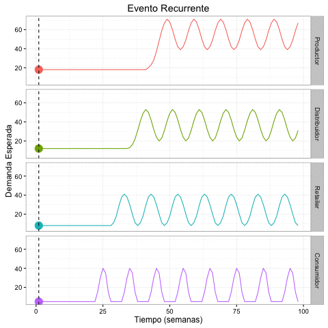

Agenda
- Bio
- What is Forecasting
- The Supply Chain-Sales Forecasting Dilema
- Problems facing Forecasting
- Time Series Methods
- Econometric Methods
Bio
"Street Cred"
- Mechanical Engineer - Tec de Monterrey
- M.A. Manufacturing, Supply Chain and Global Operations - McGill University
- More than 10 years of experience in analytics, customer facing and business-unit centric supply chains
- Industries:
- Retail
- Consumer Packaged Goods
- Electronics
- Aerospace
- Automotive
- Manufacturing
- Fintech
What is Forecasting
Definition
- Forecasting is the process of making statements about events whose actual outcomes have not yet been observed.
The Supply Chain-Sales Forecasting Dilema
The viscious circle

Problems facing Forecasting
What to expect...
- Customer demand planning
- Investor uncertainty
- Economic planning
- Seasonal changes in demand/utilization
- Roles of risk and uncertainty
Time series methods
How to approach it...
- Moving average
- Exponential smoothing
- Extrapolation
- Linear prediction
- Trend estimation
- Growth curve
Econometric methods (casual methods)
Another approach...
- Regression analysis using linear regression or non-linear regression
- Autoregressive moving average (ARMA)
- Autoregressive integrated moving average (ARIMA)
- Econometrics
Demand Forecasting
Q&A
Gracias!
Arturo Cardenas Martinez